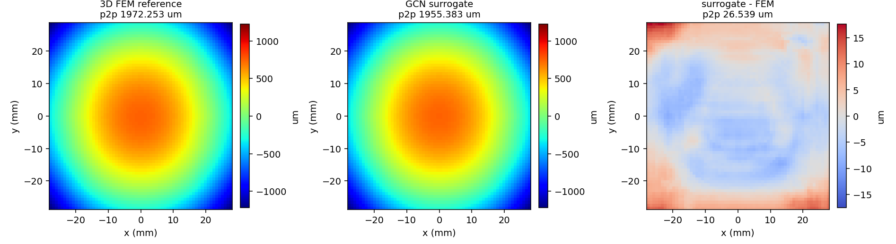

WarpStack-GNN is a graph neural network trained on WarpStack's own 3D output. It is global: once trained for a design, it answers anywhere in that design's material and thermal space, returning the full warpage map in 19.4 ms — 2,146× faster than solving the same package in 3D. Measured against independent full 3D solves, the whole-map difference is 0.49% of peak-to-peak and the correlation with 3D is 0.99996. It is scored on 512 held-out material and thermal configurations kept entirely out of training. This paper reports the accuracy, the per-design training cost, and the point past which the network is cheaper than solving directly.
A network trained on WarpStack's own 3D output returns the full warpage map without solving. It is global: once trained for a design, it answers anywhere in that design's material and thermal space, in milliseconds. The figures below are measured on the 2nm CoWoS reference design.
WarpStack-GNN learns a package’s warpage behaviour from results produced by the detailed 3D method, then returns the full map without solving. Here it is asked for a design point held out of training, and the same point is solved from scratch in 3D for comparison.

| Method | Runtime | vs 3D | Error vs 3D |
|---|---|---|---|
| Full 3D solve reference | 41.54 s | 1× | — |
| WarpStack-GNN GNN | 19.4 ms | 2,146× | 0.49% |
| Quantity | Held-out set | Fresh 3D solves |
|---|---|---|
| Design points | 512 | 6 |
| Mean 3D peak-to-peak | 1,393 µm | 1,699 µm |
| Whole-map difference | 0.38% | 0.49% |
| Peak-to-peak error | 1.41% | 1.89% |
| Correlation with 3D | 0.9996 | 0.99996 |
| Package | 56.2 × 57.5 mm |
| Stacked die columns | 135 |
| Mechanical layers | 237 |
| Solid elements | 45,035 |
| Degrees of freedom | 169,602 |
| Full 3D solve | 41.54 s |
| Training labels (1,792 points) | 32.2 min |
| Network training | 50.8 min |
| Total one-time cost | 83.1 min |
| Per design point afterwards | 19.4 ms |
| Break-even vs solving directly | 120 points |
WarpStack is in active development. Request a demo or a walkthrough on your own 2.5D/3D chiplet designs, and we'll get you set up.